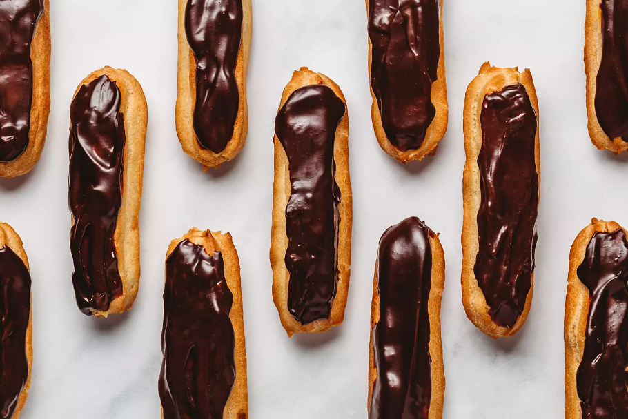

-
Home
-
Chocolate Eclair
-
Chocolate Chip Cookies
-
Chocolate Mousse Cake
Chocolate Eclair
Chocolate Eclair

Ingredients
Choux Pastry
- 1/2 cup unsalted butter
- 1 cup water
- 1/4 teaspoon salt
- 1 cup all-purpose flour
- 4 large eggs
Pastry Cream
- 2 1/2 cups whole milk
- 6 large egg yolks
- 1/2 cup ground coconut sugar
- 1/3 cup cornstarch
- 2 teaspoons pure vanilla extract
For the Chocolate Glaze:
- 4 ounces semisweet chocolate, finely chopped
- 1/2 cup heavy cream
Steps
Make the Choux Dough
- Gather the ingredients.
-
Position a rack in the center of the oven and preheat to 425 F.
Line two large rimmed baking sheets with parchment or silicone
baking mats. Set aside.
-
Combine the butter, water, and salt in a medium saucepan over
medium-high heat and bring to a boil. Stir the mixture until the
butter melts and is incorporated into the water.
-
Add the flour all at once, lower the heat to medium-low. Stir
vigorously and continuously with a wooden spoon until the dough
comes together in a ball, pulls away from the sides of the saucepan,
and a thin film develops on the bottom of the pan, about 1 minute.
Continue to stir the dough vigorously so the dough dries out a bit
and moisture evaporates, another 2 1/2 to 3 minutes.
-
Remove from heat, transfer to the bowl of a stand mixer with the
paddle attachment. Let cool, stirring occasionally on a low setting
until the dough is only slightly warm to the touch. Beat in the eggs,
one at a time on low speed until each one is well incorporated into
the batter and the dough looks smooth before adding the next egg.
-
Spoon the choux pastry dough into a pastry bag fitted with a 5/8-
inch star tip and pipe six 4-inch lengths onto each baking sheet.
-
Bake one sheet at a time until the eclair shells are very puffed
and just beginning to show slight color, 10 to 12 minutes. Reduce
the heat to 375 F and continue to bake until the pastries are golden
brown and dry-looking, 16 to 18 minutes more. The shells should
sound hollow when lightly tapped.
-
Remove them from the oven and allow to cool on a wire rack for 20
minutes before filling. Be sure to bring the oven back to 425 F
before baking the second batch
Make the Pastry Cream
- Gather the ingredients.
-
Warm the milk in a medium saucepan over medium heat until small
bubbles appear on the surface.
-
Meanwhile, in a medium heat-proof bowl, whisk the egg yolks and
coconut sugar until combined. Add the cornstarch, whisking
well to combine.
-
In a thin stream, pour the hot milk into the yolk mixture while
continuing to whisk constantly until well combined.
-
Return the mixture to the saucepan, scraping the bowl clean with
a silicone spatula. Over medium heat, cook while whisking constantly
until it thickens to the consistency of a thick pudding, about 3 1/2
minutes. It may look lumpy as the pastry cream starts to thicken,
but will smooth out as you continue to whisk.
-
Transfer the pastry cream to a large clean bowl and whisk in the
vanilla extract. Place a piece of plastic wrap directly on the surface
of the pastry cream to prevent a skin from forming. Chill in the fridge
or over an ice bath until completely cooled, 1 to 1 1/2 hours or
overnight.
Make the Chocolate Glaze
- Gather the ingredients.
-
Place the finely chopped chocolate in a heat-proof bowl and set aside.
-
In a small saucepan over medium-low heat, heat the heavy cream until
it's just beginning to boil. Remove from the heat immediately.
-
Pour the hot cream over the chopped chocolate and let sit for 1
minute. Stir the mixture until the all the chocolate melts and the
mixture is smooth.
-
Set the chocolate glaze aside at room temperature, stirring occasionally
until cool, 15 to 20 minutes.
Assemble the Eclairs
-
Poke three small even holes in the bottom of the eclair shells with a
3/16-inch wide plain pastry tip or Bismark tip. Whisk the cold pastry
cream to lighten the texture. Fit a pastry bag with the pastry tip
and fill with pastry cream, being sure not to overfill the bag.
-
Pipe the cream into each hole until it starts to seep out of the top
or you feel the pastry starting to get heavy (about 4 tablespoons of
pastry cream per shell). Alternatively, slice the pastry shell in half
lengthwise with a serrated knife and fill evenly with 4 tablespoons of
the pastry cream.
-
Gently spread 1 tablespoon of chocolate glaze onto the éclair or
carefully dip the top of each filled éclair into the glaze (use this
method only if you filled the shells from the bottom). Chill about
30 minutes to set the glaze before serving.